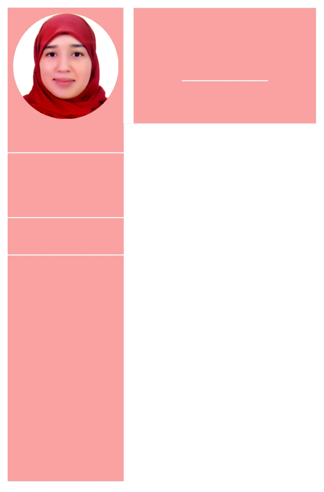

AICHA NAIT LHAJ
Contactez moi
0623256254
naimanaitlhaj@gmail.com
Hay Kourci Rue Laymoune NR 62 Oulad Teima,
Date de naissance
31/Jan/1994
Autre info
Les compétences
-connaissances générales : la
gestion de l ’environnement,
l ’analyse des données territoriales, l ’aménagement du territoire
l ’urbanisme.
connaissances informatique : Pack
office : word,power point,excel
Logiciels : SIG , sphinx
Les langues
français : courant
Anglais : moyen
Arabe : maternelle
Amazigh : maternelle
Intérêt
cuisine,voyage
Éducation
Centre de formation des enseignants du primaire 2015 - 2016
Université Kadi Ayad Marrakech
2014 - 2015
obtenu la licence professionnelle en ingénierie territoriale.
EST Agadir
2012 - 2014
obtenu le DUT en aménagement du territoire et la gestion de
l ’environnement à EST Agadir
2011 - 2012
Baccalauréat en science expérimentale : science de la vie et de la terre Expérience
Ministère De L'éducation Nationale
2016 - 2020
Enseignante d'école primaire
la municipalité d Oulad teima
2014 - 2015
stage
la RAMSA d ’Agadir
2013 - 2014
Stage
la Wilaya D ’Agadir
2012 - 2013
Stage